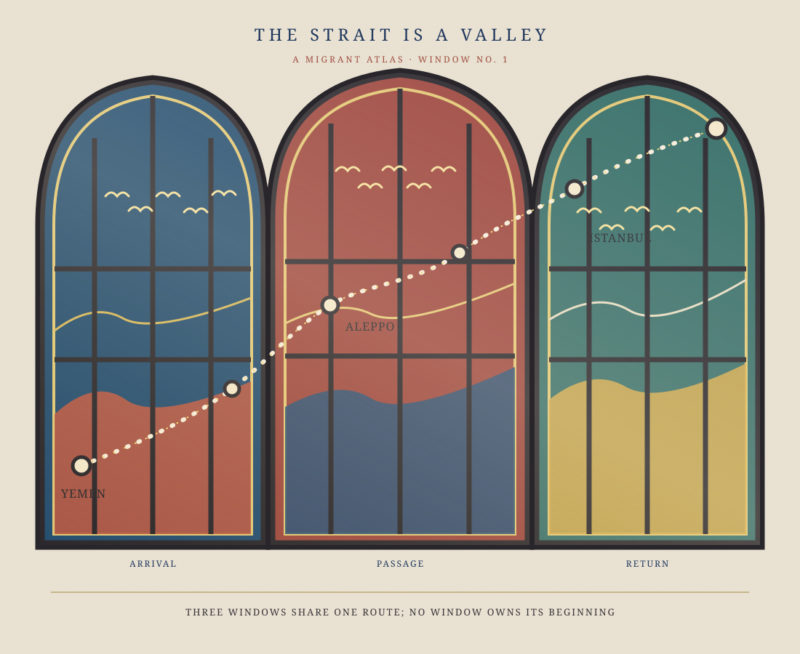

The Strait Is a Valley — Window No. 1

This digital image simulates colored glass and glow; it does not transmit daylight. See the still image.

This digital image simulates colored glass and glow; it does not transmit daylight. See the still image.